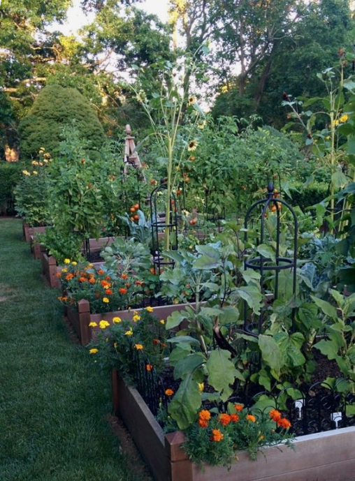
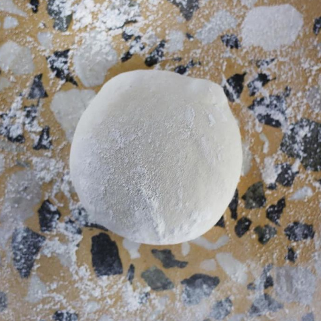
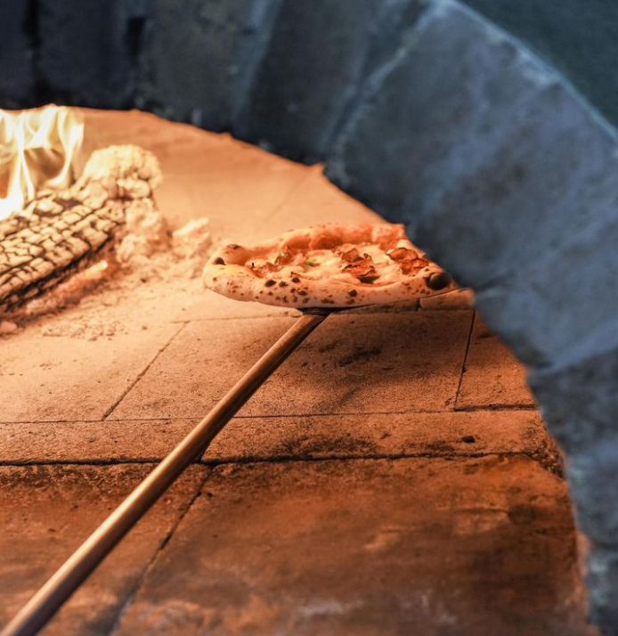

NUESTRA HUERTA
Nuestros platos estan hechos en una buena medida por ingredientes sacados de nuestra propia huerta, que se puede apreciar en nuestro restaurant. Ingredientes frescos para platos increibles.

MASA MADRE
Todas nuestras pizzas estan hechas con masa madre. Esta masa no lleva levadura agregada y pasa por un proceso de fermentacion de al menos 5 dias, para despues mandarlas al horno.

PREPARACION
En Bollo te vas a encontrar con calidad. Nuestra pizza esta hecha de masa madre y al horno de barro, con toppings frescos de nuestra huerta. Ademas, podes elegir ensaladas, milanesas, pastas frescas, entre varias otras cosas mas. No te lo pierdas.
